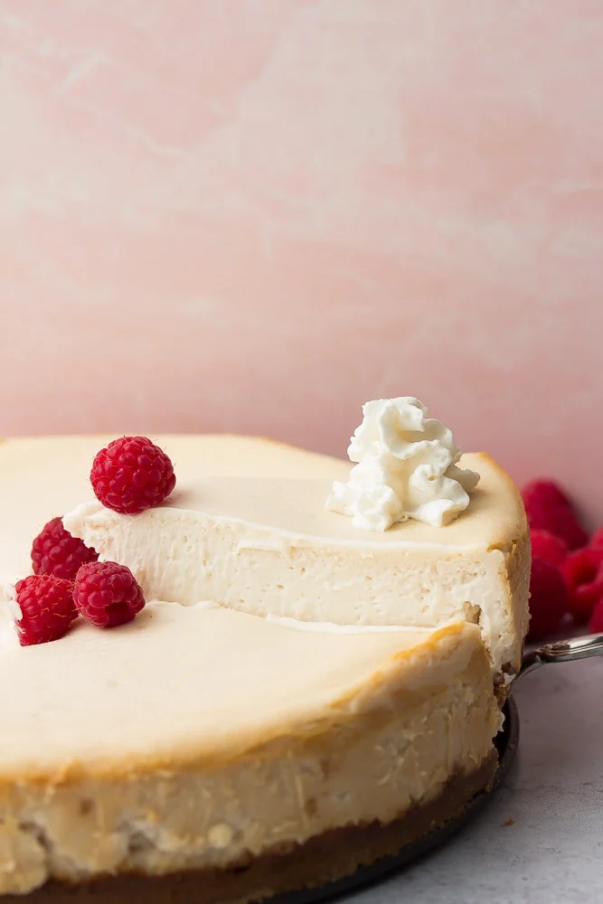

A vegan cheesecake so you can enjoy a sweet
dessert without worrying about animals being hurt!
Ingredients
For the crust
- 1 1/2 cups vegan graham cracker crumbs
- 5 tablespoons melted coconut oil *or vegan butter
- 1/4 cup granulated sugar
For the filling
- 32 ounces (4 8-ounce packages) vegan cream cheese
- 13.5 ounce can coconut cream
- 4 tablespoons cornstarch
- 1 1/4 cups granulated sugar
- 2 teaspoons pure vanilla extract
- 3 tablespoons lemon juice, from about 2 small lemons
Optional fresh strawberry sauce
- 1 1/2 cups fresh strawberries, hulled and sliced
- 1/4 cup granulated sugar
- 1 teaspoon lemon zest, from 1 small lemon
Instructions
- Preheat the oven to 350 degrees F
- Wrap a 9 inch springform pan with 1-2 layers of aluminum foil,
overing the bottom and the sides
- Cut a circle of parchment paper for
the bottom of the pan, and spray lightly with oil.
For the crust
- In a medium bowl, add the cookie crumbs, melted coconut oil and sugar
- Stir well to combine, then press down into the bottom of the prepared pan/li>
- Press down firmly and evenly, going up the sides a little. Set aside.
For the filling
- In the bowl of an electric mixer with the whisk attachment, or using a handheld mixer, beat the vegan cream cheese until smooth, about 1 minute
- Now add the rest of the filling ingredients and beat until smooth, scraping down the sides and bottom of the bowl as needed
- Once it's completely smooth, pour into prepared pan over the crust and spread evenly
To Bake
- Place in the oven and bake for 50 minutes. Do not open the oven door during this time. Turn off the heat, and let it sit in the oven for 10 more minutes. The cheesecake will be slightly jiggly, and not look very done in the middle. That is correct, it will firm up when it cools.
- Remove from the oven, and let it cool for about 15 minutes at room temperature before moving to the refrigerator to cool for at least 4 hours, preferably overnight, before slicing and serving. When ready to serve, slice and serve with any optional toppings.
Optional fresh strawberry sauce
- In a food processor, add 1 1/4 cups of the sliced strawberries (reserving 1/4 cup), sugar and lemon zest
- Process until smooth
- Toss with the sliced strawberries in a small bowl and chill for at least an hour before serving
Return to top
Back to home page